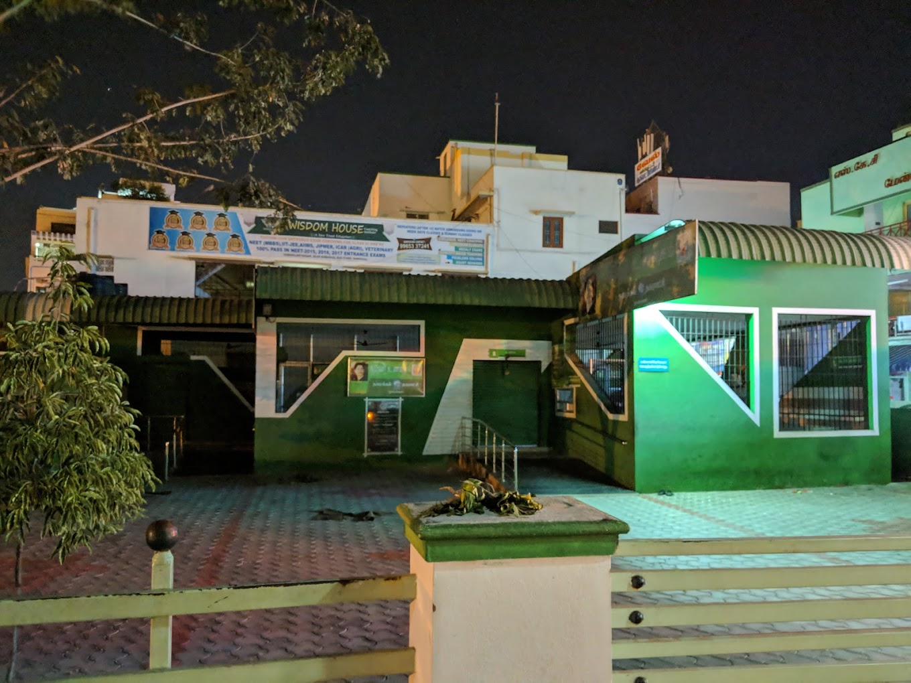

NAMAKKAL
NAMAKKAL AMMA UNAVAGAM

Amma Unavagam (Tamil: அம்மா உணவகம்) is a food subsidisation programme run by the Ministry of Food and Civil Supplies, Government of Tamil Nadu in India.
Under the scheme, municipal corporations of the state-run canteens serving subsidised food at low prices.
The genesis of the scheme could be traced to the concept of rural restaurants promoted by Nimbkar Agricultural Research Institute.
The literal meaning of the name of the scheme Amma Unavagam is Mother's canteen. Amma translates to mother in Tamil, but is also a reference to the former chief minister of Tamil Nadu J. Jayalalithaa, who introduced this restaurant chain as part of government schemes aimed at aiding economically disadvantaged sections of society